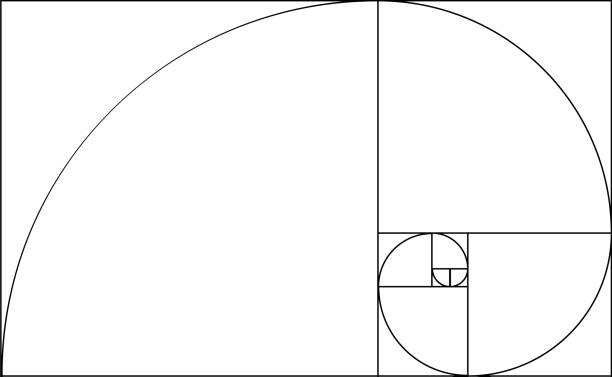

Golden Ratio Formula
The Golden Ratio is a mathematical constant that describes a ratio relationship found in various natural and aesthetic contexts. The formula for the Golden Ratio can be expressed as:
φ = (1 + √5) / 2
Where φ (phi) represents the Golden Ratio.
Approximation:
The value of the Golden Ratio is approximately 1.6180339887.
The Golden Ratio exhibits unique mathematical properties and is often considered aesthetically pleasing. It appears in various fields such as art, architecture, design, and nature, contributing to harmonious proportions and balanced compositions.
